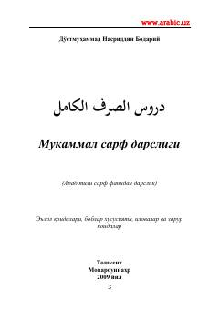

MSArab tili sarf fanining asoslari va qoidalarini o'rgatuvchi mukammal darslik.
Ushbu kitob arab tili sarf fanini o'rganish uchun mo'ljallangan mukammal darslik bo'lib, e'lol qoidalari, boblar xususiyati va zarur qoidalarni o'z ichiga oladi. Muallif asarda arab tili qoidalarini o'zbek tilida tushunarli tarzda bayon etib, tolibi ilmlarga qulaylik yaratishni maqsad qilgan. Kitob boshlang'ich va o'rta bosqichdagi o'quvchilar uchun muhim qo'llanma hisoblanadi.